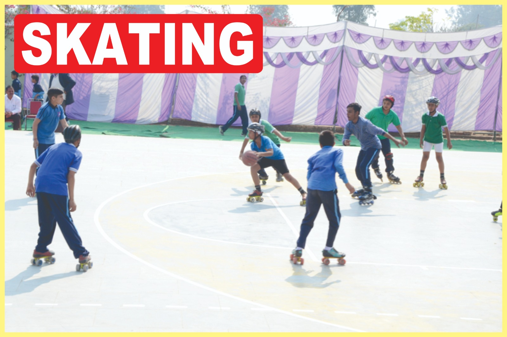
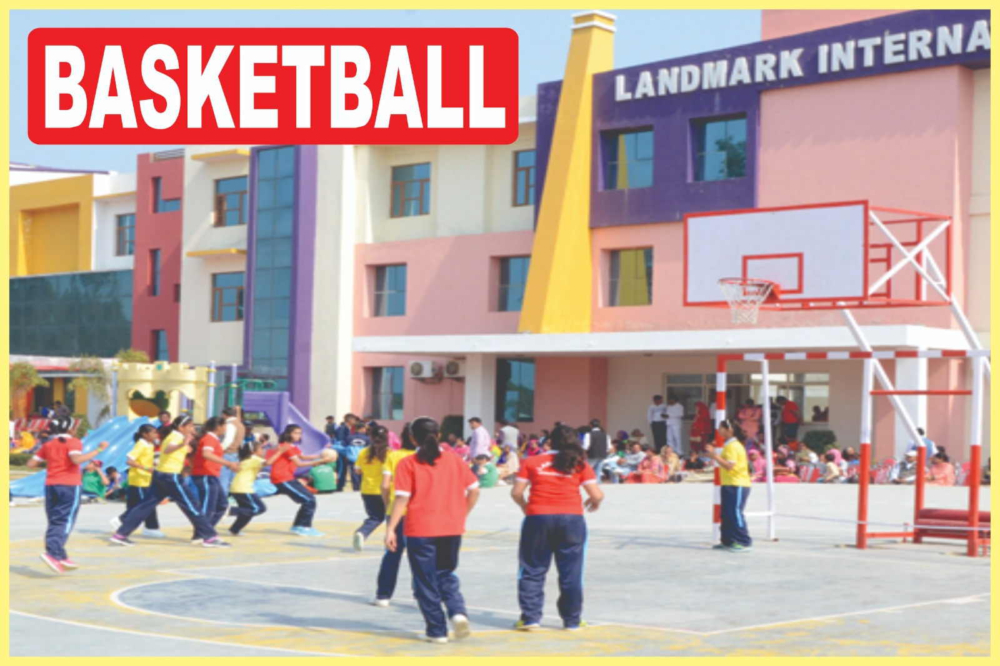
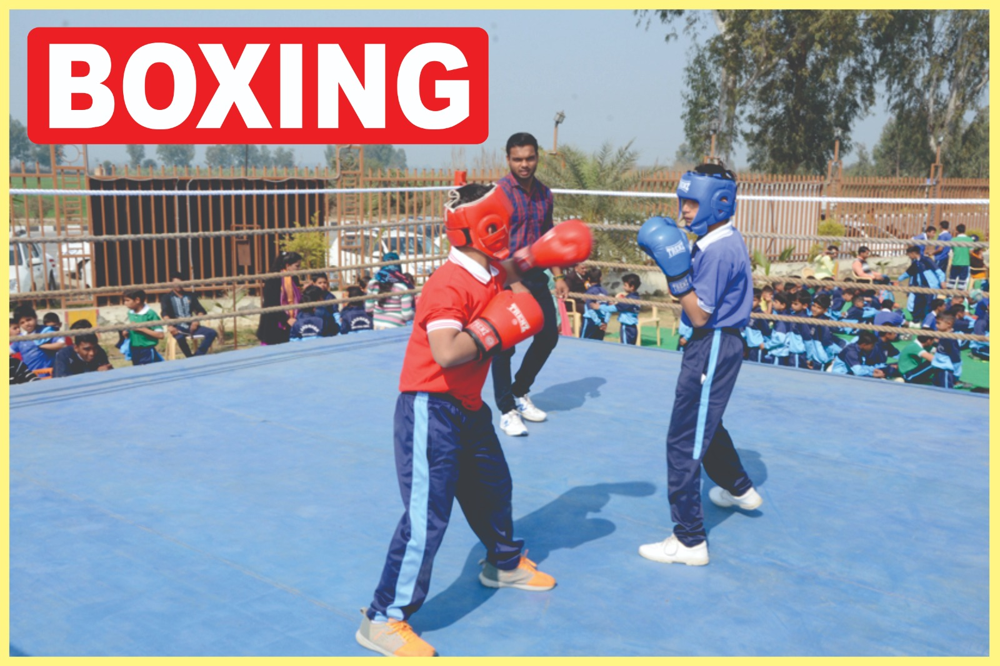

Karate Program
The Karate program at Landmark International School is designed to teach students the fundamentals of martial arts while promoting physical fitness, discipline, and self-confidence. Our experienced instructors guide students through various techniques, including strikes, blocks, and kata, ensuring that they develop a strong foundation in Karate.
Students of all skill levels are welcome, from beginners to advanced practitioners. Our curriculum emphasizes respect, focus, and perseverance, helping students cultivate a positive mindset both on and off the mat.
Shooting Program
The Shooting program at Landmark International School is designed to develop students' marksmanship skills while promoting focus, discipline, and safety. Our experienced instructors provide comprehensive training in various shooting disciplines, ensuring that students learn the fundamentals of handling firearms responsibly and effectively.
Students are introduced to both air rifle and pistol shooting, with a strong emphasis on safety protocols and proper techniques. Our curriculum is tailored to accommodate students of all skill levels, from beginners to advanced shooters.
Skating Program
The Skating program at Landmark International School focuses on developing students' skills in roller skating and ice skating. Our experienced coaches provide training that emphasizes balance, coordination, and agility, ensuring that students learn the fundamentals of skating in a safe and supportive environment.
Students participate in various activities, including freestyle skating, figure skating, and speed skating, allowing them to explore their interests and develop their talents.
Basketball Program
The Basketball program at Landmark International School is designed to develop students' skills in basketball while promoting teamwork, strategy, and physical fitness. Our experienced coaches provide comprehensive training that covers all aspects of the game, including dribbling, passing, shooting, and tactical awareness.
Students of all skill levels are welcome, from beginners to advanced players. Our curriculum emphasizes the importance of teamwork and communication, helping students learn how to work together effectively on the court.
Boxing
Boxing is a celebrated sports in our school, we have our own boxing ring for our players.We encourage all our players because boxing make a player both physically and mentally strong.
Students of all skill levels are welcome, from beginners to advanced players. Our curriculum emphasizes the importance of teamwork and communication, helping students learn how to work together effectively on the court.
